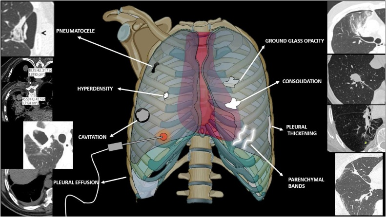
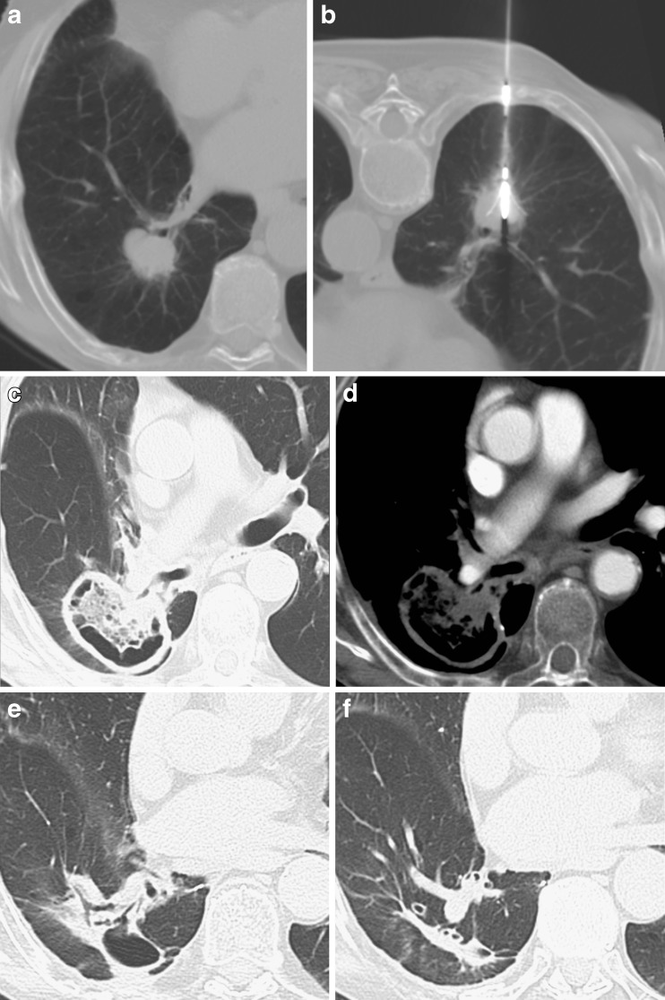
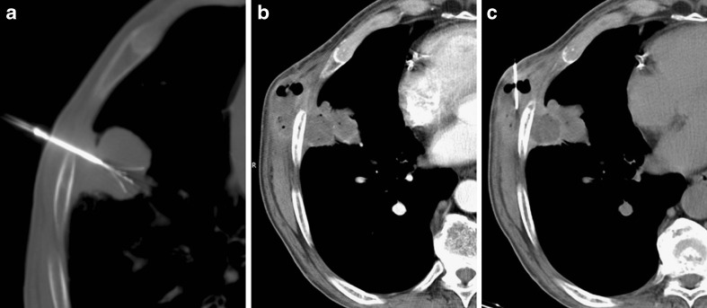

6148 — Hội chứng sau đốt & nhiễm trùng ổ đốt sau đốt nhiệt phổi / Post-ablation syndrome and ablation-zone infection
Tags: pattern:hang pattern:dong-dac pattern:gco pattern:tran-dich pattern:xo-hoa vung:phoi score:CIRSE protocol:CT-nguc protocol:surveillance incidentaloma:not-phoi
Mức chắc chắn (certainty): tổng hợp y văn (literature synthesis) — số liệu biến chứng và ngưỡng xử trí lấy từ tổng quan 2026 về biến chứng đốt nhiệt phổi (How GY, Pua U, Cancers 2026, PMC13702536); hình ảnh diễn tiến ổ đốt lấy từ nghiên cứu theo dõi sau RFA phổi (Araujo-Filho JAB et al., Eur J Radiol Open 2020, PMC7666375) và loạt ca RFA phổi (Bargellini I et al., Insights Imaging 2011, PMC3259330); số liệu hội chứng sau đốt định lượng lấy từ nghiên cứu tiến cứu cryoablation thận (Zhong J et al., Cardiovasc Intervent Radiol 2018, PMC5758690) vì không có nghiên cứu tiến cứu tương ứng ở phổi/trẻ — bài ghi rõ đây là ngoại suy.
Câu chốt của bài: sau đốt nhiệt phổi, sốt nhẹ + mệt + buồn nôn trong vài ngày đầu, kèm ổ đốt đông đặc có quầng GGO rồi hang hóa và teo dần là diễn tiến mong đợi, không phải thất bại hay nhiễm trùng. Ngược lại, sốt ≥ 38,5 °C kéo dài/lặp lại, khí mới trong ổ đốt, mức khí–dịch, thành dày lên, ổ đốt TO RA sau tháng thứ 1 phải đọc là nhiễm ổ đốt — vì áp-xe chỉ ~0,5–3% nhưng aspergillosis xâm lấn 1,44% với tử vong 26,1%, và rò phế quản–màng phổi 0,3% có thể tử vong.
1. Tổng quan bệnh học – cơ chế hình ảnh: vì sao ổ đốt "trông xấu" mà vẫn lành
- Bệnh học: đốt nhiệt (RFA/MWA/cryoablation) gây hoại tử đông vón (coagulative necrosis) trung tâm, quanh đó là vùng chuyển tiếp xuất huyết–viêm và vành tăng sinh mạch phản ứng. Mô hoại tử được đại thực bào dọn dẹp, mô xơ thay thế → ổ đốt co nhỏ dần thành dải xơ. Vì phổi có khí và đường thở, mô hoại tử có thể được khạc ra qua phế quản → tạo hang vô khuẩn.
- TẠI SAO CT hiện các mẫu hình này (vật lý + mô bệnh):
- Đông đặc trung tâm: mô hoại tử + phù + xuất huyết lấp phế nang → +30 đến +60 HU, mạch máu bị che; vùng này không ngấm thuốc vì đã mất tưới máu.
- Quầng GGO quanh ổ đốt: phù/xuất huyết vi mạch ở vùng chuyển tiếp → đậm độ trung gian (−900 → +30 HU), mạch máu còn thấy xuyên qua; đây là "viền an toàn" (margin) cần đạt, không phải tổn thương mới.
- Hang (cavitation): mô hoại tử thoát qua phế quản → khoang khí; hang vô khuẩn có thành mỏng, đều, không ngấm thuốc, không mức khí–dịch, và nhỏ dần theo thời gian.
- Bóng khí (pneumatocele)/nang khí: van một chiều ở tiểu phế quản sau viêm → khí bị giữ, thành mỏng; thường tự khỏi.
- Sốt sau đốt: giải phóng nội bào (DNA, cytokine IL-6) từ khối hoại tử lớn + viêm màng phổi phản ứng → "hội chứng sau đốt", không phải nhiễm khuẩn.
- Áp-xe: khoang hoại tử bị bội nhiễm → khí + mức khí–dịch, thành dày, ngấm thuốc không đều, đông đặc quanh tăng lên, ổ to ra sau tháng đầu; khí mới xuất hiện muộn là dấu hiệu cảnh báo.
- Ngưỡng định lượng cốt lõi:
- Biến chứng chung sau đốt phổi: tràn khí màng phổi 37–44% (tới 20% cần chọc hút/đặt dẫn lưu); xuất huyết nhu mô 17,7%, ho ra máu 16,1%, tử vong do chảy máu 0,4% (248 ca RFA); tràn dịch màng phổi phản ứng 19% sau RFA và 2,9% sau MWA cần dẫn lưu (How 2026).
- Hội chứng sau đốt (tiến cứu, cryoablation thận 64 ca): 38/64 = 59% có triệu chứng; 52% chỉ có triệu chứng giống cúm; 39% hết hoàn toàn trong 10 ngày; 38% không triệu chứng; đau đỉnh điểm ngày 3; 72% giảm đau 90–100% trong 10 ngày (Zhong 2018). Phổi chưa có nghiên cứu tiến cứu tương đương — dùng làm mốc thời gian tham chiếu.
- Nhiễm trùng ổ đốt: sau RFA ~3% sốt sau đốt và ~3% áp-xe; sau MWA viêm phổi 2,9%, áp-xe 0,5%; aspergillosis xâm lấn (IPA) 1,44% sau MWA với tử vong 26,1%; hang hóa sớm và to ra 6,3% sau RFA, là yếu tố thuận lợi cho bội nhiễm (How 2026).
- Yếu tố nguy cơ hang hóa (có số): tổn thương cách màng phổi ≥ 20 mm, tiếp xúc mạch ≥ 3 mm, phế quản ≥ 2 mm nằm trong vùng đốt, điện cực đa nan ≥ 3 cm; sốt ≥ 38,5 °C, bạch cầu tăng ngày 1 và đang dùng corticoid là yếu tố độc lập của hang hóa (How 2026).
- Rò phế quản–màng phổi (BPF): 0,3% (2/682 ca MWA), cả 2 tử vong; rò khí kéo dài > 5–7 ngày phải tìm BPF (How 2026).
- Ở trẻ: chỉ định đốt phổi chủ yếu là di căn phổi osteosarcoma/Ewing và một số u đặc không mổ được; trẻ nằm gây mê, phổi nhỏ hơn nên cùng một thể tích đốt chiếm tỉ lệ nhu mô lớn hơn, và trẻ thường giảm bạch cầu sau hóa trị — nguy cơ nhiễm ổ đốt về lý thuyết cao hơn, nhưng chưa có số liệu riêng (xem bài 6129 cho kỹ thuật đốt ở trẻ).
2. Mẫu hình + chẩn đoán phân biệt theo thời điểm (Gamut)
Mẫu hình chung: trẻ có ổ đốt phổi, sốt/đau ngực/ho trong tuần đầu hoặc bất thường mới trên CT theo dõi — câu hỏi là "diễn tiến mong đợi – nhiễm – rò khí – tái phát".
- Theo thời điểm:
- 24 giờ–1 tuần: đông đặc trung tâm + quầng GGO (mong đợi); tràn khí màng phổi; xuất huyết/ho ra máu; sốt nhẹ (hội chứng sau đốt).
- 1–3 tháng: ổ đốt hang hóa, có thể to hơn trong 1 tháng đầu; bóng khí; tràn dịch phản ứng; đây là cửa sổ dễ gọi nhầm áp-xe.
- 3–12 tháng: ổ đốt teo dần thành dải xơ; hang còn lại nhưng phải nhỏ dần; nốt mới ở bờ = tái phát; khí mới/mức dịch = nhiễm.
- Theo hình thái:
- Hang vô khuẩn: thành mỏng đều, không ngấm thuốc, không mức dịch, nhỏ dần.
- Áp-xe: khí + mức khí–dịch, thành dày, ngấm thuốc, đông đặc quanh, to ra.
- IPA: hang/nốt có dấu liềm khí (air crescent) hoặc khí mới ở bệnh nhân giảm miễn dịch, có thể kèm dày màng phổi, nhồi máu phổi.
- Rò phế quản–màng phổi: tràn khí dai dẳng dù đã dẫn lưu, khí trong ổ đốt thông với khoang màng phổi, khí thở ra qua ống dẫn lưu.
- Tái phát tại bờ: nốt đặc, tròn, ngấm thuốc, lớn dần sát bờ ổ đốt, không khí/mức dịch.
- Gợi nhớ "ĐỢI – KHÍ – DỊCH – BỜ": Đông đặc + quầng GGO (mong đợi) · Ợ (hội chứng sau đốt: sốt nhẹ vài ngày) · KHí mới/mức khí–dịch (áp-xe/IPA) · Dịch màng phổi (phản ứng/empyema) · BỜ ổ đốt (nốt mới = tái phát).
3. Bảng so sánh phân biệt (ma trận đối chiếu)
| Thực thể (entity) | Hình ảnh điển hình | Chốt vào (rule-in) | Chốt loại (rule-out) | Gợi ý xác nhận |
|---|---|---|---|---|
| Ổ đốt mong đợi | Đông đặc trung tâm không ngấm thuốc + quầng GGO ≥ 5 mm; hang thành mỏng; teo dần | Đúng vị trí đốt, không khí mới, không mức dịch, nhỏ dần qua các lần chụp | Khí mới/mức dịch + thành dày + to ra sau tháng 1 → nhiễm | So CT 24 giờ và các mốc 1–3–6–12 tháng |
| Áp-xe ổ đốt | Khí + mức khí–dịch, thành dày ngấm thuốc, đông đặc quanh tăng | Sốt ≥ 38,5 °C kéo dài/lặp + khí mới + mức dịch | Hang khô, thành mỏng, không sốt, nhỏ dần → không áp-xe | Cấy máu/dịch ổ đốt; không chọc qua màng phổi nếu không cần; kháng sinh + dẫn lưu khi có chỉ định |
| Aspergillosis xâm lấn (IPA) | Khí mới/liềm khí trong ổ đốt, nốt + quầng, dày màng phổi; có thể nhồi máu | Giảm miễn dịch/giảm bạch cầu + khí mới + sốt kháng kháng sinh | Hang khô ở người khỏe, không suy giảm miễn dịch → ít nghĩ IPA | Galactomannan, (1→3)-β-D-glucan, cấy nấm, CT lặp 3–7 ngày; voriconazole là điều trị đầu tay |
| Viêm phổi quanh ổ đốt | Đông đặc ngoài ổ đốt, có phế quản hơi, có thể một thùy | Đông đặc ngoài ranh giới ổ đốt + sốt + ran phổi | Đông đặc đúng ổ đốt, không lan → diễn tiến mong đợi | Cấy đờm/BAL; kháng sinh theo kinh nghiệm |
| Rò phế quản–màng phổi (BPF)/rò khí kéo dài | Tràn khí dai dẳng > 5–7 ngày dù đã dẫn lưu; khí trong ổ đốt thông màng phổi | Khí thở ra qua ống dẫn lưu + ổ đốt sát màng phổi | Tràn khí nhỏ, tự hết trong 1–3 ngày → không BPF | CT lát mỏng; nội soi phế quản; van nội phế quản/keo sinh học; mổ nếu thất bại |
| Tái phát tại bờ ổ đốt | Nốt đặc, tròn, ngấm thuốc, lớn dần sát bờ; không khí, không dịch | Nốt mới sát bờ, lớn lên trên ≥ 2 CT cùng kỹ thuật | Dải xơ mỏng, không ngấm thuốc, ổn định/teo → sẹo | So chuỗi CT; PET sau ≥ 3 tháng; sinh thiết nếu đổi điều trị |
| Xuất huyết ổ đốt | Đậm độ cao trong ổ đốt, có thể mức dịch–máu; ho ra máu | Ho ra máu + đậm độ cao mới, giảm dần | Đậm độ thấp, ổn định → hoại tử | Hb, CT lặp; nút mạch nếu giả phình/chảy máu ồ ạt |
| Tràn dịch/empyema | Dịch màng phổi có vách, dày màng phổi, bóng khí trong dịch | Dịch + sốt + dày màng phổi + khí trong khoang màng phổi | Dịch ít, tự hết, không sốt → phản ứng | Siêu âm/CT; cấy dịch; dẫn lưu + kháng sinh |
| Bóng khí (pneumatocele) | Khoang khí thành rất mỏng, không dịch, không ngấm thuốc | Sau đốt/viêm, không sốt, tự xẹp | Thành dày + dịch + to ra → áp-xe | CT lặp; không can thiệp nếu không triệu chứng |
| Di căn theo đường kim (seeding) | Nốt dọc đường kim/thành ngực, có thể kèm bóng khí | Nốt đúng đường kim, đặc, lớn dần | Khối có khí + sốt + viêm mô mềm → áp-xe (không phải seeding) | Sinh thiết khi còn phân vân — ca báo cáo cho thấy áp-xe giả seeding |

Sơ đồ minh họa kèm ảnh CT: bóng khí (pneumatocele), đậm độ cao trong nốt, hang hóa, tràn dịch màng phổi, GGO, đông đặc, dày màng phổi, dải nhu mô — những hình thái cần nhận diện để không gọi nhầm là biến chứng. Nguồn: Araujo-Filho JAB et al., Eur J Radiol Open 2020 (PMC7666375), Fig. 1, CC BY-NC-ND 4.0 (nguyên bản, không chỉnh sửa).
NSCLC thùy dưới phải sát phế quản phân thùy: a nốt trước đốt; b đặt kim; c–d sau 1 tháng — hang lớn chiếm toàn bộ nốt, không ngấm thuốc; e–f sau 6 và 12 tháng — hang nhỏ dần thành dải xơ = đáp ứng hoàn toàn. Nguồn: Bargellini I et al., Insights Imaging 2011 (PMC3259330), Fig. 6, CC BY 4.0.4. Protocol chụp + phân loại biến cố + xử trí
- CT ngực sau đốt (trẻ, ALARA):
- Mốc chụp: 24 giờ (nền, xác nhận vùng đốt + biến chứng sớm) → 1 tháng → 3 tháng → 6 tháng → 12 tháng, sau đó theo lịch ung thư.
- Kỹ thuật: lát mỏng 1–1,5 mm, cửa sổ phổi + trung thất, MPR; không cản quang là đủ cho diễn tiến ổ đốt; có cản quang khi nghi áp-xe/empyema, tái phát, giả phình, huyết khối.
- Đo và ghi: đường kính ổ đốt 3 trục, độ dày thành hang, có/không khí, mức khí–dịch, quầng GGO quanh ổ đốt, khoảng cách tới màng phổi, nốt ở bờ, tràn khí/tràn dịch.
- Mốc diễn tiến bình thường: ổ đốt có thể to hơn trong tháng đầu (phù/xuất huyết), sau đó phải nhỏ dần ≥ 20–30% mỗi lần chụp; hang khô có thể tồn tại nhiều tháng nhưng không được to lên.
- Phân loại biến cố (CIRSE sửa đổi, dùng trong tổng quan How 2026):
| Độ | Ý nghĩa | Ví dụ sau đốt phổi |
|---|---|---|
| 1 | Không cần điều trị, không hậu quả | Tràn khí nhỏ, đau thoáng qua |
| 2 | Điều trị nhẹ, nằm viện ≤ 48 giờ | Tràn khí cần chọc hút, tràn dịch nhỏ |
| 3 | Điều trị tích cực, nằm viện > 48 giờ | Dẫn lưu màng phổi, kháng sinh IV, truyền máu |
| 4 | Hậu quả lâu dài/thêm can thiệp lớn | Rò khí kéo dài cần van/keo, áp-xe cần dẫn lưu kéo dài |
| 5 | Tử vong | BPF ồ ạt, nhiễm khuẩn huyết |
| 6 | Tử vong trong 24 giờ (bất kể nguyên nhân) | — |
- Xử trí theo bệnh cảnh:
- Hội chứng sau đốt: điều trị hỗ trợ (hạ sốt, bù dịch, giảm đau); không kháng sinh thường quy; hẹn CT nếu sốt kéo dài > 5–7 ngày hoặc sốt ≥ 38,5 °C.
- Áp-xe: kháng sinh theo cấy + dẫn lưu qua da/qua nội soi phế quản khi ổ lớn, có mức dịch, hoặc thất bại kháng sinh; không chọc kim mù qua màng phổi.
- IPA: voriconazole đầu tay, phối hợp kiểm soát ức chế miễn dịch; không chờ cấy nếu hình ảnh + bối cảnh điển hình.
- BPF/rò khí kéo dài: dẫn lưu + điều trị nhiễm; van nội phế quản/keo sinh học; mổ khi thất bại.
- Sơ đồ tiếp cận sốt sau đốt:
flowchart TD
A[Sốt hoặc bất thường mới sau đốt nhiệt phổi] --> B{Sốt trong 3 ngày đầu, ≤ 38,5 °C, không khó thở?}
B -->|Có| C[Hội chứng sau đốt: hỗ trợ, theo dõi 48-72 giờ]
B -->|Không| D[CT ngực lát mỏng + xét nghiệm máu, cấy]
D --> E{Khí mới hoặc mức khí-dịch trong ổ đốt?}
E -->|Có| F{Giảm miễn dịch, giảm bạch cầu?}
F -->|Có| G[Nghĩ IPA: galactomannan, cấy nấm, voriconazole sớm]
F -->|Không| H[Nghĩ áp-xe: kháng sinh + dẫn lưu khi ổ lớn/mức dịch]
E -->|Không| I{Ổ đốt to ra sau tháng 1 hoặc nốt mới ở bờ?}
I -->|Có| J[Nghĩ tái phát: so chuỗi CT, PET sau 3 tháng, sinh thiết]
I -->|Không| K{Tràn khí dai dẳng > 5-7 ngày?}
K -->|Có| L[Tìm BPF: CT lát mỏng, nội soi phế quản, van/keo, mổ nếu thất bại]
K -->|Không| M[Theo dõi CT theo lịch 1-3-6-12 tháng]
C --> M
G --> M
H --> M
J --> M
L --> M
5. Biến thể bình thường và cạm bẫy
- Khí trong ổ đốt NGAY sau đốt là bình thường (do bay hơi mô + co kéo), nhưng khí MỚI xuất hiện ở lần chụp sau — đặc biệt kèm mức dịch/thành dày — là nhiễm cho tới khi chứng minh ngược.
- Ổ đốt to ra trong tháng đầu (phù/xuất huyết) là bình thường; to ra sau tháng thứ 1 hoặc không nhỏ đi sau 3 tháng phải tìm áp-xe/tái phát.
- Áp-xe giả di căn theo đường kim: ca báo cáo có khối dưới da cạnh ổ đốt sau 9 tháng, bờ ngấm thuốc + bóng khí, bị nghi seeding nhưng sinh thiết cho áp-xe lan thành ngực — đừng sinh thiết mù rồi bỏ qua điều trị nhiễm, và đừng mổ "cắt di căn" khi có khí + viêm mô mềm (Bargellini 2011, Fig. 5).
- Hang khô tồn tại lâu không phải thất bại: hang có thể còn 6–12 tháng nhưng phải nhỏ dần; chỉ can thiệp khi to ra, mức dịch, sốt.
- PET/CT trong 3 tháng đầu dương tính giả do viêm/hoại tử; không dùng PET sớm để kết luận tái phát — chờ ≥ 3 tháng và so với CT.
- Tràn khí dai dẳng sau đốt không được "rút ống rồi theo dõi": rò khí > 5–7 ngày phải tìm BPF; bỏ sót dẫn tới viêm màng phổi/empyema và tử vong (0,3% ca MWA, cả 2 tử vong).
- Corticoid che nhiễm: trẻ đang corticoid vì bệnh nền có thể không sốt, bạch cầu không tăng dù đã áp-xe — hạ ngưỡng chụp CT.
- Đừng nhầm dải xơ với tái phát: dải xơ mỏng, không ngấm thuốc, ổn định/teo; tái phát là nốt đặc, tròn, lớn dần.
6. Tự lượng giá — Blind Quiz
Ca 1 — Người lớn (dữ liệu hình ảnh tham chiếu): NSCLC thùy dưới phải sát phế quản phân thùy, đốt RFA. CT 1 tháng: hang lớn chiếm toàn bộ nốt, không ngấm thuốc; bệnh nhân không sốt.
- Câu hỏi: Hang này là thất bại, áp-xe hay đáp ứng hoàn toàn? Dấu hiệu nào quyết định? Theo dõi tiếp thế nào?
Bấm để hiện đáp án
- Đáp ứng hoàn toàn: hang thành mỏng, không ngấm thuốc, không mức khí–dịch, bệnh nhân không sốt — mô hoại tử đã được khạc ra qua phế quản.
- Theo dõi: CT 6 và 12 tháng — ca gốc cho thấy hang nhỏ dần thành dải xơ (e–f).
- Cạm bẫy: gọi hang là "áp-xe" rồi kháng sinh/dẫn lưu oan, hoặc gọi là "tái phát" rồi sinh thiết.
- Nguồn ảnh: Bargellini I et al., Insights Imaging 2011 (PMC3259330), Fig. 6, CC BY 4.0.
Ca 2 — Người lớn: u dưới màng phổi phải đốt RFA. 9 tháng sau, khối dưới da cạnh ổ đốt, bờ ngấm thuốc, có bóng khí. Không sốt rõ.

- Câu hỏi: Hai chẩn đoán hàng đầu? Vì sao không được mổ ngay? Bước tiếp theo?
Bấm để hiện đáp án
- Hai chẩn đoán: di căn theo đường kim (seeding) và áp-xe lan thành ngực. Ca gốc: sinh thiết → áp-xe, không phải seeding.
- Không mổ ngay vì khối có khí + viêm mô mềm nghiêng nhiễm; mổ "cắt di căn" sẽ làm lan nhiễm và bỏ sót điều trị kháng sinh/dẫn lưu.
- Bước tiếp: sinh thiết/chọc hút có hình ảnh, cấy; kháng sinh + dẫn lưu nếu áp-xe.
- Nguồn ảnh: Bargellini I et al., Insights Imaging 2011 (PMC3259330), Fig. 5, CC BY 4.0.
Ca 3 — Trẻ 9 tuổi (ca giả định, tổng hợp từ ngưỡng của bài), di căn phổi osteosarcoma, đốt MWA 1 nốt 12 mm. Ngày 3: sốt 38,2 °C, mệt, đau ngực nhẹ. CT 24 giờ: đông đặc trung tâm + quầng GGO 6 mm, không khí, không tràn dịch.
- Câu hỏi: Đây là hội chứng sau đốt hay nhiễm? Có cần kháng sinh không? Khi nào chụp lại và chụp gì?
Bấm để hiện đáp án
- Hội chứng sau đốt: sốt ≤ 38,5 °C trong 3 ngày đầu, không khó thở, ổ đốt đông đặc + quầng GGO (viền an toàn), không khí, không mức dịch, không tràn dịch.
- Không kháng sinh thường quy; điều trị hỗ trợ (hạ sốt, giảm đau, bù dịch).
- Chụp lại CT lát mỏng nếu sốt > 5–7 ngày, sốt ≥ 38,5 °C, ho ra máu, khó thở; theo lịch thường quy 1–3–6–12 tháng.
- Cạm bẫy: trẻ sau hóa trị giảm bạch cầu — sốt có thể là nhiễm khuẩn huyết, phải cấy máu và hạ ngưỡng can thiệp; ngược lại, đừng đổi sang kháng sinh kéo dài chỉ vì "ổ đốt trông xấu".
- Nguồn ảnh: Araujo-Filho JAB et al., Eur J Radiol Open 2020 (PMC7666375), Fig. 1, CC BY-NC-ND 4.0.
Bài liên quan chéo
- 6129 – Đốt nhiệt qua da nốt phổi ở trẻ khi không mổ được — kỹ thuật, biên an toàn, biến chứng
- 6147 – Viêm phổi do ICI ở trẻ — mờ phổi mới ở trẻ đang điều trị ung thư
- 025 – Hang & nấm phổi: dấu liềm khí — hang vô khuẩn vs aspergilloma
- 040 – Tràn dịch màng phổi — tràn dịch phản ứng vs empyema
- 6702 – Theo dõi sau mổ nốt phổi ở trẻ: nốt mới là tái phát hay sẹo?
Ảnh
6148_hinh-thai-sau-dot_CT_PMC7666375.jpg,6148_hang-lanh-tinh_CT_PMC3259330.jpg,6148_ap-xe-gia-di-can_CT_PMC3259330.jpg— nguồn + giấy phép từng ảnh:images/CREDITS.md.- Hai ảnh CT là ca người lớn (dữ liệu công bố); hình sơ đồ là minh họa tổng hợp từ nghiên cứu RFA phổi.
Không dùng để chẩn đoán độc lập khi chưa có người hướng dẫn.